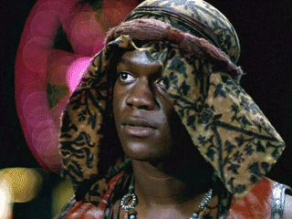
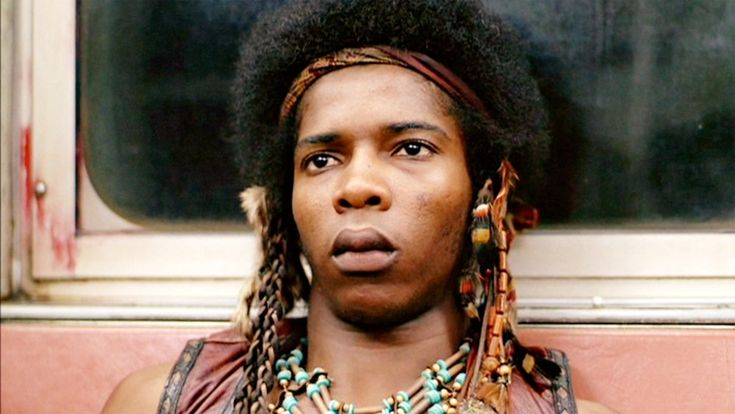

"Ajax" Interpretado por James Remar
Fue el que más triunfó en Hollywood. Lo viste seguro como el fantasma del padre en la serie Dexter, en Sex and the City o en películas como Django Unchained. Sigue súper activo.
"Cleon" Interpretado por: Dorsey Wright
Tuvo un papel en la película musical Hair (1979), pero al poco tiempo se cansó de los castings. Se retiró de la actuación y trabajó durante décadas para la empresa de subtes de Nueva York (la MTA)..jpg)
"Rembrant" Interpretado por: Marcelino Sanchez
El grafitero del grupo siguió actuando en algunas series de televisión. Lamentablemente, falleció muy joven en 1986, a los 28 años, a causa de un cáncer terminal.
"Cochise" Interpretado por: David Harris
Tuvo una carrera muy respetable apareciendo como invitado en series policiales legendarias como Miami Vice, NYPD Blue y Law & Order. Falleció recientemente, a finales de 2024.
"Snow" Interpretado por: Brian Tyler
Prácticamente desapareció del mapa cinematográfico después de esta película. Decidió alejarse por completo de la actuación en Hollywood para dedicarse a la música y a su vida privada..jpg)
"Cowboy" Interpretado por: Tom McKitterick
The Warriors fue su debut y despedida del cine comercial. Hizo un poco de teatro en Nueva York, dejó la actuación definitivamente y se convirtió en periodista y escritor profesional..jpg)
"Vermin" Interpretado por: Terry Michos
Hizo algunos papeles menores en televisión durante los años 80 y luego cambió de rumbo por completo. Se dedicó a ser conductor de noticias en televisión local, locutor de radio y profesor de oratoria.
"Mercy" Interpretada por: Deborah Van Valkenburgh
Le fue muy bien. Se convirtió en una cara muy famosa en Estados Unidos gracias a la serie de comedia Too Close for Comfort en los 80, y siguió trabajando en cine y TV hasta el día de hoy.